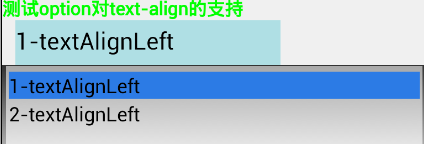

- Introduction
- 1. EMP5.4技术白皮书
- 2. EMP 安全
- 3. Release Note
- 4. EMP产品已知问题列表
-
5.
EMP界面开发规范
- 5.1. 变更记录
- 5.2. FAQ
- 5.3. CSS样式
- 5.4. 属性
-
5.5.
界面标签
- 5.5.1. 控件支持属性和样式对照表
-
5.5.2.
基础标签
- 5.5.2.1. A
- 5.5.2.2. B & Strong
- 5.5.2.3. Body
- 5.5.2.4. Br
- 5.5.2.5. Div
- 5.5.2.6. Form
- 5.5.2.7. I & Em
- 5.5.2.8. Img
- 5.5.2.9. InputButton
- 5.5.2.10. InputCheckbox
- 5.5.2.11. InputHidden
- 5.5.2.12. InputPassword
- 5.5.2.13. InputRadio
- 5.5.2.14. InputSegment
- 5.5.2.15. InputSwitch
- 5.5.2.16. InputText
- 5.5.2.17. Label
- 5.5.2.18. Richtext
- 5.5.2.19. Select & Option
- 5.5.2.20. Table & Tr & Td & Th
- 5.5.2.21. Webview
- 5.5.3. SDK定制说明
- 5.5.4. 定制标签
- 5.6. 布局与刷新
-
5.7.
Lua
-
5.7.1.
基础Lua库
- 5.7.1.1. accelerometer
- 5.7.1.2. audio
- 5.7.1.3. corp
- 5.7.1.4. database
- 5.7.1.5. document
- 5.7.1.6. file
- 5.7.1.7. gesture
- 5.7.1.8. gps
- 5.7.1.9. history
- 5.7.1.10. http
- 5.7.1.11. json
- 5.7.1.12. kv
- 5.7.1.13. location
- 5.7.1.14. offline
- 5.7.1.15. qrcode
- 5.7.1.16. screen
- 5.7.1.17. system
- 5.7.1.18. timer
- 5.7.1.19. tls
- 5.7.1.20. utility
- 5.7.1.21. video
- 5.7.1.22. window
- 5.7.2. 界面标签支持的Lua接口
- 5.7.3. 动画
- 5.7.4. RYTL脚本库
-
5.7.1.
基础Lua库
- 5.8. javascript
- 5.9. 事件
- 6. EMP开发配置
- 7. Migrate
- 8. EWP5.4管理后台功能说明文档
- 9. EWP API
-
10. EWP DEMO
- 10.1. redis缓存示例
- 10.2. redis数据存储示例
- 11. EWP Manual
- Published using GitBook
Select and Option
1 功能说明
select表示多选框，子节点option必须与select同时使用。
例:
<select>
<option>option111</option>
<option>option222</option>
</select>
2 属性
全局属性以及具体说明参见 * 属性介绍
2.1 select属性
2.1.1 border
指定select是否有边框
@value string 0/1
@default 0
2.1.2 enable
指定select是否可以弹出选项列表
@value string true/false
@default true
2.2 option属性
2.2.1 selected
设置select控件的默认选项，如果没有该属性，则默认选中第一个option
@value string selected
2.2.2 text
text表示option控件显示出来的值
@value string 任意字符串
注：option的文字单行显示
2.2.3 value
value值用来上传服务器
@value string 任意字符串
注：option的属性目前不支持lua中动态设置。
3 样式
3.1 select样式
全局样式以及具体说明参见 * 样式介绍
注意：字体样式只对选中项起作用
3.1.1 background-color
设置背景色
@format #RGB(如#FFFFFF)
@default transparent(透明)
3.1.2 background-image
设置背景图
@format1 url(image.png)
@format2 url(local:image.png)
@format3 url(http:// | https// | ewp_local://)
3.1.3 border
设置控件边框的样式（宽度，线型，颜色）
@format1 25px solid #fff000
@format2 只写以上三项的任意一项或两项
@default 1px solid #d4d5d9
3.1.4 border-radius
设置控件四个边的圆角属性
@format1 25px 10px 0px 10px
@format2 10px
@default 0px(即直角)
3.1.5 color
设置字体颜色
@format #RGB(如#FF00FF)
@default #000000
3.1.6 filter
设置渐变背景色或者透明度.
@format1 progid(startColorStr='#FFFFFF',endColorStr='#000000',gradientType='0',alpha='0.5')
@format2 progid(alpha='0.5')
3.1.7 font-size
设置字体大小
@format 10px
@default 各平台有差异
3.1.8 font-style
设置字体样式
@value normal/italic
@default normal
3.1.9 font-weight
设置字体类型
@value normal/bold
@default normal
3.2 height
指定控件高度
@default 30px
3.2.1 text-align
设置文字对齐方式
@value left/center/right
@default left
3.3 width
指定控件宽度
@default 根据内容最长的子option计算，但不可超出父控件显示范围
3.4 option样式
option的样式支持区别于其他控件. 同一组的option只需要设置一个样式,并将此样式作用到同组的其他option上. 取前置标签的样式作为整组option的样式. 如下报文,则会以option2的样式作为整组option的样式.
<select>
<option >option111</option>
<option class="option2">option222</option>
<option class="option3">option222</option>
</select>
3.4.1 color
设置字体颜色
@format #RGB(如#FF00FF)
@default #000000
3.4.2 font-size
设置字体大小
@format 10px
@default 各平台有差异
3.4.3 font-style
设置字体样式
@value normal/italic
@default normal
3.4.4 font-weight
设置字体类型
@value normal/bold
@default normal
3.4.5 text-align
设置文字对齐方式
@value left/center/right
@default left
4 事件
4.1 option
4.1.1 onclick
option可以设置点击事件.
说明：option的点击事件只有在用户切换option控件时才触发。如下图示例,若select当前选中项为option1，用户在弹出的option选项列表中点击了option1不能触发点击事件，点击option2才能触发点击事件。
5 Examples
示例代码地址： select.xml
说明：当select控件无可选用项时，iOS的5.3EMP与6.0ERT显示效果不同，不影响功能，5.3无可选用项时，弹出下拉框，内容为空，6.0不弹出下拉框，安卓同6.0，保留当前显示效果各自为准，目前不做统一。
5.1 position
代码片段1:css
<style>
.father{width:200px;height:30px;left:10px;background-color:#afdfe4;}
.positionFixed{position:fixed;filter:progid(alpha='0.5');background-color:#E0FFFF;}
.positionToplevel{position:toplevel;top:50px;filter:progid(alpha='0.5');background-color:#E0FFFF;}
</style>
代码片段2:页面
<body>
<!-- positon:fixed，这是body的第一个控件 -->
<select class='father,positionFixed'>
<option>1:in select Fixed</option>
<option>2:in select Fixed</option>
</select>
<!-- positon:fixed，这是body的最后一个控件 -->
<select class='father,positionFixed'>
<option>1:in select Fixed</option>
<option>2:in select Fixed</option>
</select>
<body>
效果图:
5.2 text/value
代码片段1:css
<style>
.father{width:200px;height:30px;left:10px;background-color:#afdfe4;}
</style>
代码片段2:页面
<body>
<!-- text/value-->
<b>测试option对text/value的支持</b><br/>
<select class='father'>
<option value="value1">option-text1</option>
<option value="value2">option-text2</option>
<option value="value3">option-text3</option>
</select>
<body>
效果图:

5.3 selected
代码片段1:css
<style>
.father{width:200px;height:30px;left:10px;background-color:#afdfe4;}
</style>
代码片段2:页面
<body>
<!-- selected-->
<b>测试option对selected的支持:设置选择第二项</b><br/>
<select class='father'>
<option value="value1">option-text1</option>
<option selected="selected" value="value2">option-text2</option>
<option value="value3">option-text3</option>
</select>
<body>
效果图:

5.4 display&hide&visibility
代码片段1:css
<style>
.father{width:200px;height:30px;left:10px;background-color:#afdfe4;}
.display1{display:none;}
.display2{display:block;}
.visibility1{visibility:visible;}
.visibility2{visibility:hidden;}
</style>
代码片段2:页面
<body>
<b>测试select对hide/display/visibility的支持</b><br/>
<!-- hide -->
<label>下面的select有:hide=false</label><br/>
<select hide="false" class='father'>
<option>option1</option>
<option>option2</option>
</select>
<label>下面的select有:hide=true</label><br/>
<select hide="true" class='father'>
<option>option1</option>
<option>option2</option>
</select>
<!-- diaplay -->
<label>下面的select有:display=none</label><br/>
<select class='father,display1' >
<option>option1</option>
<option>option2</option>
</select>
<label>下面的select有:display=block</label><br/>
<select class='father,display2' >
<option>option1</option>
<option>option2</option>
</select>
<!-- visibility -->
<label>下面的select有:visibility=visible</label><br/>
<select class='father,visibility1' >
<option>option1</option>
<option>option2</option>
</select>
<label>下面的select有:visibility=hidden</label><br/>
<select class='father,visibility2' >
<option>option1</option>
<option>option2</option>
</select>
<body>
效果图:

5.5 enable
代码片段1:css
<style>
.father{width:200px;height:30px;left:10px;background-color:#afdfe4;}
</style>
代码片段1:lua
function click(arg)
local info="可以点击！info:"..arg;
window:alert(info);
end;
代码片段2:页面
<body>
<!-- enable and onclick事件 -->
<b>测试select对enable的支持，option对onclick的支持</b><br/>
<label>下面的select有:enable=true</label><br/>
<select class='father' enable="true" >
<option>option1</option>
<option>option2</option>
</select>
<label>下面的select有:enable=false</label><br/>
<select class='father' enable="false" >
<option>option1</option>
<option>option2</option>
</select>
<label>下面的option定义了onclick事件</label><br/>
<select class='father'>
<option onclick="click('option1')">option1</option>
<option onclick="click('option2')">option2</option>
</select>
<body>
效果图:
5.6 background-image&background-color&filter
代码片段1:css
<style>
.father{width:200px;height:30px;left:10px;background-color:#afdfe4;}
.background_color {background-color:#FFFF00;}
.background_image {background-image:url(a.png);}
.filter1 {filter:progid(startColorStr='#FFFF00',endColorStr='#ff0000',gradientType='1',alpha='0.5');}
.filter2 {filter:progid(alpha='0.5'); background-color:#FFFF00;}
</style>
代码片段2:页面
<body>
<!-- filter/background-color/background-image-->
<b>测试select对filter/background-color/background-image的支持</b><br/>
<!-- filter -->
<label>下面的select有:filter渐变</label><br/>
<select class='father,filter1' >
<option>option1</option>
<option>option2</option>
</select>
<label>下面的select有:filter透明度</label><br/>
<select class='father,filter2' >
<option>option1</option>
<option>option2</option>
</select>
<!-- background-color -->
<label>下面的select有:background-color</label><br/>
<select class='father,background_color' >
<option>option1</option>
<option>option2</option>
</select>
<!-- background-image -->
<label>下面的select有:background-image</label><br/>
<select class='father,background_image' >
<option>option1</option>
<option>option2</option>
</select>
<body>
效果图:

5.7 font系列
5.7.1 select对font系列的支持
代码片段1:css
<style>
.father{width:200px;height:30px;left:10px;background-color:#afdfe4;}
.textColor {color:#ff0000;}
.fontWeight{font-weight:bold;}
.fontSize{font-size:25px;}
.fontStyle{font-style:italic;}
.textAlignLeft{text-align:left;}
.textAlignCenter{text-align:center;}
.textAlignRight{text-align:right;}
</style>
代码片段2:页面
<body>
<!-- color/font-size/font-wight/font-style-->
<b>测试select对color/font-size/font-wight/font-style/text-align的支持</b><br/>
<!--color-->
<select class='father,textColor' >
<option>1-color</option>
<option>2-color</option>
</select>
<!--fontSize-->
<select class='father,fontSize' >
<option>1-font-size:25px</option>
<option>2-font-size:25px</option>
</select>
<!--fontWeight-->
<select class='father,fontWeight' >
<option>1-font-weight</option>
<option>2-font-weight</option>
</select>
<!--fontStyle-->
<select class='father,fontStyle' >
<option>1-font-style</option>
<option>2-font-style</option>
</select>
<!--textAlign-->
<select class='father,textAlignLeft' >
<option>1-textAlignLeft</option>
<option>2-textAlignLeft</option>
</select>
<select class='father,textAlignCenter' >
<option>1-textAlignCenter</option>
<option>2-textAlignCenter</option>
</select>
<select class='father,textAlignRight' >
<option>1-textAlignRight</option>
<option>2-textAlignRight</option>
</select>
<body>
效果图:
6 
6.0.1 option对font系列的支持
option样式支持规则,同组的option支持一个样式
6.0.1.1 option对color的支持
代码片段1:css
<style>
.father{width:200px;height:30px;left:10px;background-color:#afdfe4;}
.textColor {color:#ff0000;}
.tip{font-size: 14px;color:#00FF00;}
.option_father{font-size: 15px;}
</style>
代码片段2:页面
<body>
<b class="tip">测试option对color的支持</b><br/>
<select class='father' >
<option class='option_father,textColor'>1-color</option>
<option>2-color</option>
</select>
<body>
效果图:
7
7.0.0.1 option对font-size的支持
代码片段1:css
<style>
.father{width:200px;height:30px;left:10px;background-color:#afdfe4;}
.fontSize{font-size:25px;}
.tip{font-size: 14px;color:#00FF00;}
</style>
代码片段2:页面
<body>
<b class="tip">测试option对font-size</b><br/>
<select class='father' >
<option class='fontSize'>1-font-size:25px</option>
<option>2-font-size:25px</option>
</select>
<body>
效果图:
8
8.0.0.1 option对font-weight的支持
代码片段1:css
<style>
.father{width:200px;height:30px;left:10px;background-color:#afdfe4;}
.fontWeight{font-weight:bold;}
.tip{font-size: 14px;color:#00FF00;}
.option_father{font-size: 15px;}
</style>
代码片段2:页面
<body>
<b class="tip">测试option对font-wight的支持</b><br/>
<select class='father' >
<option class='option_father,fontWeight'>1-font-weight</option>
<option>2-font-weight</option>
</select>
<body>
效果图:
9
9.0.0.1 option对font-style的支持
代码片段1:css
<style>
.father{width:200px;height:30px;left:10px;background-color:#afdfe4;}
.fontStyle{font-style:italic;}
.tip{font-size: 14px;color:#00FF00;}
.option_father{font-size: 15px;}
</style>
代码片段2:页面
<body>
<b class="tip">测试option对font-wight的支持</b><br/>
<b class="tip">测试option对font-style的支持</b><br/>
<select class='father' >
<option class='option_father,fontStyle'>1-font-style</option>
<option>2-font-style</option>
</select>
<body>
效果图:
10
10.0.0.1 option对text-align的支持
代码片段1:css
<style>
.father{width:200px;height:30px;left:10px;background-color:#afdfe4;}
.textAlignLeft{text-align:left;}
.textAlignCenter{text-align:center;}
.textAlignRight{text-align:right;}
.tip{font-size: 14px;color:#00FF00;}
.option_father{font-size: 15px;}
</style>
代码片段2:页面
<body>
<b class="tip">测试option对text-align的支持</b><br/>
<select class='father' >
<option class='option_father,textAlignLeft'>1-textAlignLeft</option>
<option>2-textAlignLeft</option>
</select>
<select class='father' >
<option class='option_father,textAlignCenter'>1-textAlignCenter</option>
<option>2-textAlignCenter</option>
</select>
<select class='father' >
<option class='option_father,textAlignRight'>1-textAlignRight</option>
<option>2-textAlignRight</option>
</select>
<body>
效果图:

11
11.1 border属性
代码片段1:css
<style>
.father_border{width:300px;height:30px;left:10px;font-size:12px;}
.borderRadiusFour{border-radius: 0px 10px 15px 20px;}
.borderRadiusOne{border-radius:10px;}
.border{border:3px solid #00ff00}
...
</style>
代码片段2:页面
<body>
<!-- select对border的支持 -->
<b>测试select对border属性的支持</b><br/>
<select class='father_border'>
<option>select没有指定属性border=?默认为0</option>
</select>
<select class='father_border' border="0">
<option>select指定属性border=0</option>
</select>
<select class='father_border' border="1">
<option>select指定属性border=1</option>
</select>
<select class='father_border,background_color' border="1">
<option>select有:background-color,border=1</option>
</select>
<select class='father_border,background_image' border="1">
<option>select有:background-image,border=1</option>
</select>
...
<body>
效果图:
11.2 border样式
代码片段1:css
<style>
.father_border{width:300px;height:30px;left:10px;font-size:12px;}
.borderRadiusFour{border-radius: 0px 10px 15px 20px;}
.borderRadiusOne{border-radius:10px;}
.border{border:3px solid #00ff00}
...
</style>
代码片段2:页面
<body>
<!-- select对border的支持 -->
<b>测试select对border样式的支持</b><br/>
<select class='father_border,border' border="0">
<option>select有:border=0,border样式不起作用</option>
</select>
<select class='father_border,border' border="1">
<option>select有:border=1,border:3px solid #00ff00</option>
</select>
<select class='father_border,background_color,border' border="1">
<option>select有:background-color,border=1,border:3px solid #00ff00</option>
</select>
<select class='father_border,background_image,border' border="1">
<option>select有:background-image,border=1,border:3px solid #00ff00</option>
</select>
...
<body>
效果图:

11.3 border-radius
代码片段1:css
<style>
.father_border{width:300px;height:30px;left:10px;font-size:12px;}
.borderRadiusFour{border-radius: 0px 10px 15px 20px;}
.borderRadiusOne{border-radius:10px;}
.border{border:3px solid #00ff00}
...
</style>
代码片段2:页面
<body>
<b>测试select对border-radius的支持</b><br/>
<select class='father_border,borderRadiusOne,background_color' border="0">
<option>select有:border=0,border-radius不起作用</option>
</select>
<select class='father_border,borderRadiusOne' border="1">
<option>select有:border=1,border-radius:10</option>
</select>
<select class='father_border,borderRadiusOne,background_color' border="1">
<option>select有:border=1,border-radius:10,background-color</option>
</select>
<select class='father_border,borderRadiusOne,background_image' border="1">
<option>select有:border=1,border-radius:10,background-image</option>
</select>
<select class='father_border,borderRadiusFour' border="1">
<option>select有:border=1,border-radius:0 10 15 20</option>
</select>
<select class='father_border,borderRadiusFour,background_color' border="1">
<option>select有:border=1,border-radius:0 10 15 20,background-color</option>
</select>
<select class='father_border,borderRadiusFour,background_image' border="1">
<option>select有:border=1,border-radius:0 5 10 15,background-image</option>
</select>
...
<body>
效果图:

| Date | Note | Modifier |
|---|---|---|
| 2015-05-04 | 增加 option文字样式 | lin.jitao |
| 2015-05-06 | option样式支持规则,同组的option支持一个样式 | lin.jitao |
| 2015-08-17 | 增加新样式的示例代码及效果图 | chai.lixin |
| 2015-12-23 | 补充select默认宽高说明 | zhou.changjin |